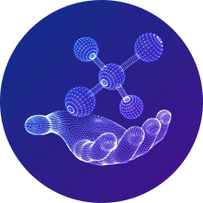
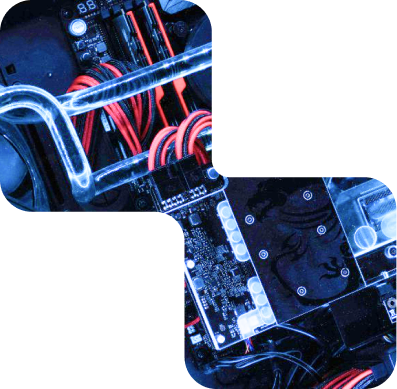
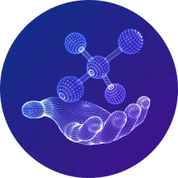
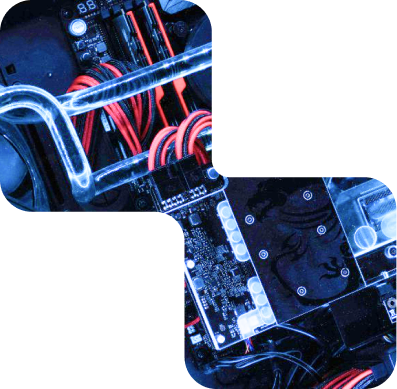

Для чого потрібен
штучний інтелект?
Як з його допомогою полегшити та покращити роботу у будь-якій сфері?
Сучасний штучний інтелект — це здатність машин i програм аналізувати інформацію, опрацьовувати її i виводити висновки, які служать основою для прийняття рішень. Головною рисою ШІ-пристроїв є їхні можливості постійного навчання, швидкої обробки інформації, накопичення знань i їх успішного використання. Це означає, що вони можуть набувати здатності сприймати та аналізувати навколишній світ, аналогічно до того, як це робить мозок людини.
Потенціал застосування штучного інтелекту дуже широкий, вже зараз він використовується у багатьох сферах: медицина, фінанси, промисловість, торгівля і звичайно у побуті людини.
Завдяки використанню модулів штучного інтелекту,ваш бізнес може зазнати значного зростання прибутку і основних показників.

Переваги знань
- АІ технології надійні, оскільки не допускають помилок, і виконують завдання точно згідно з наданими інструкціями.
- АІ дозволяє обробляти великі обсяги даних та постійно вдосконалювати свої методи.
Застосування алгоритмів штучного інтелекту дозволить вам значно зменшити витрати в будь-якій сфері:
-
 Ви зможете зекономити час завдяки швидкому навчанню і відсутності помилок.
Ви зможете зекономити час завдяки швидкому навчанню і відсутності помилок.
-
 Ресурси вашого персоналу можна перерозподілити на більш креативні завдання, які не потребують рутинних дій.
Ресурси вашого персоналу можна перерозподілити на більш креативні завдання, які не потребують рутинних дій.
-
Ви зможете зекономити гроші завдяки використанню інструментів штучного інтелекту, що суттєво зменшить ваш бюджет.
В якій сфері можна застосовувати Штучний інтелект?
Штучний інтелект корисний та потрібний для різних сфер і категорій людей. Ось декілька прикладів:
-
Бізнес
Підприємства можуть використовувати штучний інтелект для підвищення продуктивності, автоматизації процесів, аналізу даних клієнтів і прогнозування ринку.
-
Освіта
Вчителі та студенти можуть використовувати інтелектуальні системи для підтримки навчання, створення інтерактивних матеріалів і оцінювання студентів.
-
Фінансова галузь
AІ допомагає у фінансовому аналізі, прогнозуванні ринків, управлінні ризиками та автоматизації торгівлі.
-
Клієнти
Зазвичай від користувачів веб-сервісів та мобільних додатків вимагається взаємодія з інтелектуальними асистентами, які допомагають з пошуком інформації, обробкою запитів і навіть з розважальними функціями.
-
Веб-дизайнери
Штучний інтелект може аналізувати дані та взаємодію користувачів на сайті, надаючи важливу інформацію для оптимізації дизайну. Крім того, він може створювати веб-сайти, призначені для індивідуальних користувачів на основі їхніх інтересів і попереднього досвіду.
-
Медицина
AІ допомагає лікарям у діагностиці, обробці медичних зображень, розробці нових лікарських засобів і веденні електронних медичних записів.
-
Науковці
Вчені використовують AІ для аналізу складних наукових даних, симуляцій і вирішення складних наукових завдань.
-
Автоперевезення
Індустрія автотранспорту використовує ШІ для розвитку автономних автомобілів та оптимізації маршрутів доставки.
-
SMM-менеджери
За допомогою штучного інтелекту, SMM-спеціалісти можуть аналізувати великі обсяги даних з соціальних мереж, визначати тенденції та отримувати рекомендації для успішних кампаній. Автоматизовані інструменти спрощують процес планування та публікації контенту, а також взаємодію з аудиторією через чат-боти та індивідуалізовані повідомлення.
-
Програмісти
У програмуванні, штучний інтелект використовується для автоматизації рутинних завдань, тестування програм та виявлення помилок. Він також сприяє створенню інтелектуальних програм, які можуть навчатися і адаптуватися до змінних умов.
Отже, штучний інтелект може бути корисним практично для кожної галузі та для всіх, хто прагне оптимізувати процеси, підвищити продуктивність та отримати більше можливостей у різних сферах життя і бізнесу.